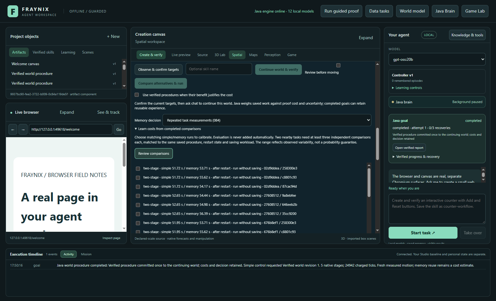
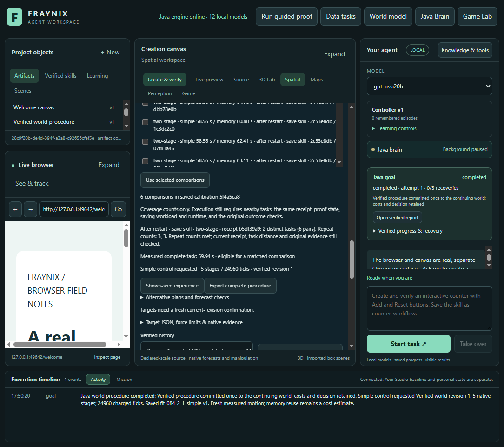
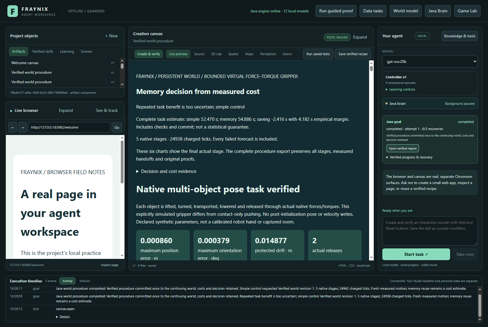
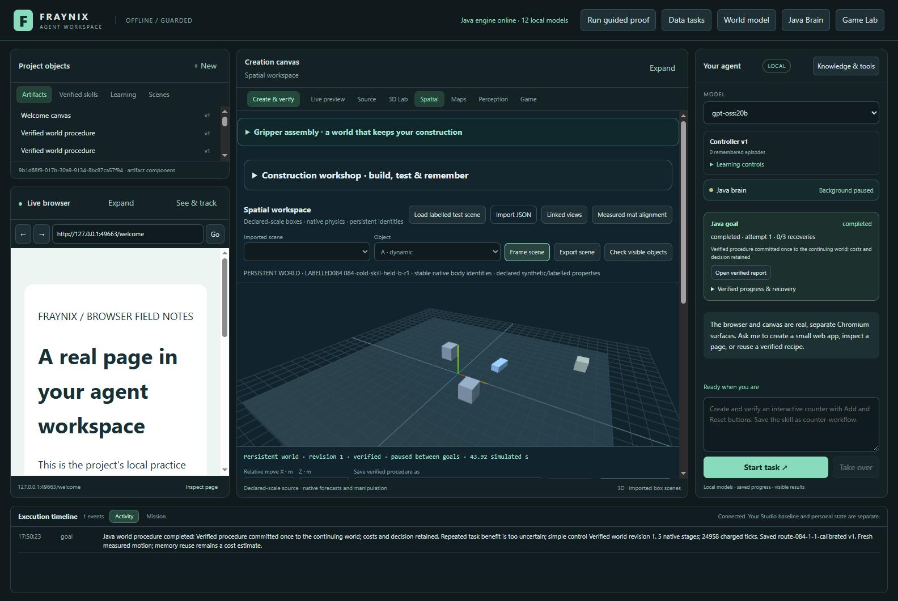

Repeat the work.
Measure the uncertainty.
Actual Java tasks, matched calibration conditions and fresh comparisons. An available estimate is a separate result from a useful decision.
Coverage with the checks intact
Four logical Java processors and a 768 MiB heap; fixed Windows affinity. Cold means a new owner before an uninterrupted task. Experience retention is off during timing; skill-saving remains real in its separate group. Interrupted timings remain excluded. These are labelled simulations, not new camera measurements.
Prediction versus completed work
Estimates are compared against actual simple and explicit-memory controls. The calibrated control also pays for loading and checking its model. Complete goal time includes native work, verification, the report, commit and requested saving; final timing-write and transport are outside it. Startup, warm-up and reopening costs are retained separately. Empirical intervals are not statistical confidence guarantees.
Replay original motion
A top-down point projection of retained native positions. Display frames are subsampled; all original samples remain in the evidence archive. This is recorded motion, not a new simulation.
Evidence informs the decision
Complete source inventory
The actual application







